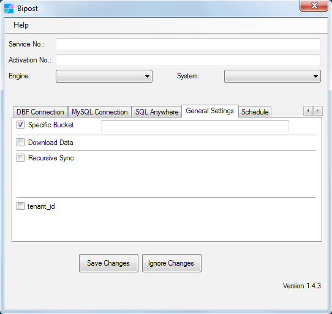

Intelisis ERP¶
Intelisis es un ERP que fabrica la empresa Intelisis Software, S.A. de C.V.
Es un sistema grande y las soluciones de Business Intelligence se desarrollan a la medida de cada necesidad.
En nuestro repositorio de GitHub podrás encontrar varios objetos de ejemplo para realizar la sincronización de la base de SQL hacia MySQL-Aurora. Estos objetos se publican bajo la licencia GNU GPLv3 GNU GENERAL PUBLIC LICENSE Versión 3, 29 de Junio 2007.
Ejemplos de configuración¶
Ejemplos de información a sincronizar usando customData.json
[
{
"active": "true",
"table": "Venta",
"fields": "Venta.ID, Venta.Empresa, Venta.Mov, Venta.MovID, Venta.FechaEmision, Venta.Concepto, Venta.Moneda, Venta.TipoCambio, Venta.Estatus, Venta.Cliente, Venta.Almacen, Venta.Agente, Venta.Condicion, Venta.Vencimiento, Venta.DescuentoLineal, Venta.Sucursal, Venta.SubModulo, Venta.Importe, Venta.Impuestos, Venta.CostoTotal, Venta.FechaRegistro, Venta.DescuentoGlobal, Venta.Proyecto",
"join": "MovTipo WITH (NOLOCK) ON Venta.Mov = MovTipo.Mov AND MovTipo.Modulo = 'VTAS' ",
"filter": "Venta.Estatus IN ('PENDIENTE','CONCLUIDO','PROCESAR') AND MovTipo.Clave IN ('VTAS.F','VTAS.D','VTAS.N','VTAS.FM','VTAS.FC') ",
"recursiveDateField": "Venta.FechaEmision"
},
{
"active": "true",
"table": "VentaD",
"fields": "VentaD.ID, VentaD.Renglon, VentaD.RenglonSub, VentaD.Articulo, VentaD.Cantidad, VentaD.Almacen, VentaD.Precio, VentaD.DescuentoLinea, VentaD.DescuentoImporte, VentaD.Impuesto1, VentaD.Costo, VentaD.ContUso, VentaD.Unidad, VentaD.Factor, VentaD.Agente ",
"join": "Venta WITH (NOLOCK) ON Venta.ID = VentaD.ID JOIN MovTipo WITH (NOLOCK) ON Venta.Mov = MovTipo.Mov AND MovTipo.Modulo = 'VTAS' ",
"filter": "Venta.Estatus IN ('PENDIENTE','CONCLUIDO','PROCESAR') AND MovTipo.Clave IN ('VTAS.F','VTAS.D','VTAS.N','VTAS.FM','VTAS.FC') ",
"recursiveDateField": "Venta.FechaEmision"
}
]
Más ejemplos en nuestro repositorio de GitHub.
Recomendaciones¶
Crear dos carpetas¶
Crea al menos dos carpetas para Bipost Sync, esto te permitirá sincronizar catálogos y movimientos en forma independiente.
Carpeta Catálogos¶
Tu primer carpeta donde está Bipost Sync la puedes nombrar Bipost_catalogos y utilizarás customData.json para enviar únicamente catálogos. Ejemplo:
[
{
"active": "true",
"table": "Sucursal",
"fields": "Sucursal, Nombre, Categoria, Estatus",
"join": "",
"filter": "",
"recursiveDateField": ""
},
{
"active": "true",
"table": "Agente",
"fields": "Agente, Nombre, Categoria, Estatus",
"join": "",
"filter": "",
"recursiveDateField": ""
},
{
"active": "true",
"table": "MovTipo",
"fields": "Modulo, Mov, Clave",
"join": "",
"filter": "",
"recursiveDateField": ""
},
{
"active": "true",
"table": "Cta",
"fields": "Cuenta, Rama, Descripcion, Tipo, EsAcreedora, EsAcumulativa, CentrosCostos, Estatus, ClaveSAT",
"join": "",
"filter": "",
"recursiveDateField": ""
},
{
"active": "true",
"table": "CentroCostos",
"fields": "CentroCostos, Rama, Descripcion, EsAcumulativo, Grupo, SubGrupo, SubSubGrupo, Estatus",
"join": "",
"filter": "",
"recursiveDateField": ""
}
]
Abre biPost.exe y asegúrate de quitar el check Recursive Sync.
Usando el JSON del ejemplo anterior, se enviará en cada sincronización todos los renglones de las tablas Sucursal, Agente, MovTipo, Cta y CentroCostos. Debido a que Bipost API utiliza una sentencia REPLACE en la base destino de MySQL, los registros se reemplazan utilizando la llave primaria de la tabla origen.
NOTA: Si la tabla que vas a enviar tiene más de un millón de registros, es recomendable que filtres el query utilizando la opción "filter":.
Carpeta Recursivo¶
La otra carpeta de Bipost Sync puedes nombrarla Bipost_diario. Abre el archivo customData.json y especifica las tablas de movimientos que vas a enviar, por ejemplo:
[
{
"active": "true",
"table": "Cont",
"fields": "Cont.ID, Cont.Empresa, Cont.Mov, Cont.MovID, Cont.FechaEmision, Cont.FechaContable, Cont.Proyecto, Cont.Moneda, Cont.TipoCambio, Cont.Estatus, Cont.Ejercicio, Cont.Periodo, Cont.Moneda2, Cont.TipoCambio2",
"join": "MovTipo WITH (NOLOCK) ON Cont.Mov = MovTipo.Mov AND MovTipo.Modulo = 'CONT' ",
"filter": "Cont.Estatus <> 'SINAFECTAR' AND MovTipo.clave IN ('CONT.P','CONT.C') ",
"recursiveDateField": "Cont.FechaEmision"
},
{
"active": "true",
"table": "ContD",
"fields": "ContD.ID, ContD.Renglon, ContD.RenglonSub, ContD.Cuenta, ContD.SubCuenta, ContD.SubCuenta2, ContD.SubCuenta3, ContD.Debe, ContD.Debe2, ContD.Haber, ContD.Haber2, ContD.Sucursal, ContD.SucursalContable ",
"join": "Cont WITH (NOLOCK) ON Cont.ID = ContD.ID JOIN MovTipo WITH (NOLOCK) ON Cont.Mov = MovTipo.Mov AND MovTipo.Modulo = 'CONT' ",
"filter": "Cont.Estatus <> 'SINAFECTAR' AND MovTipo.clave IN ('CONT.P','CONT.C') ",
"recursiveDateField": "Cont.FechaEmision"
}
]
Es importante que incluyas el parámetro "recursiveDateField": ya que lo utiliza Bipost Sync para optimizar la extracción y subida de información, por ejemplo: Supongamos que la tabla ContD tiene millones de registros, por tanto al momento de configurar "recursiveDateField": lo utilizarás en conjunto con el check Recursive Sync, ubicado en la pestaña General Settings de biPost.exe:

El rango de fechas que especifiques en General Settings se utilizará para generar una extracción y subida individual hacia AWS, reduciendo el tamaño de los datos y el tiempo de carga hacia Aurora-MySQL.
Mediante esta opción se pueden cargar históricos de varios años.
NOTA: Al apagar el check Recursive Sync automáticamente la fecha de inicio y fin se fija en el día de hoy utilizando la fecha de la máquina Windows.
Uso del Filter¶
En el ejemplo customData.json anterior, se utilizó el siguiente filtro para la tabla ContD:
"filter": "Cont.Estatus <> 'SINAFECTAR'
Si un registro del módulo Contabilidad se cancela, cambia su estatus a CANCELADO por tanto el query a la base de datos incluye los estatus CANCELADO para que estos cambios se vean reflejados en la base de Aurora-MySQL.
Si por el contrario se utiliza el filtro "Cont.Estatus = 'CONCLUIDO' entonces el query omite los estatus CANCELADO y al cambiar un ID a estatus CANCELADO no se reflejará el cambio en la base de MySQL, causando inconsistencias.
Contacto¶
¿Necesitas ayuda? ¿Buscas una solución a la medida?
Escríbemos! info@factorbi.com